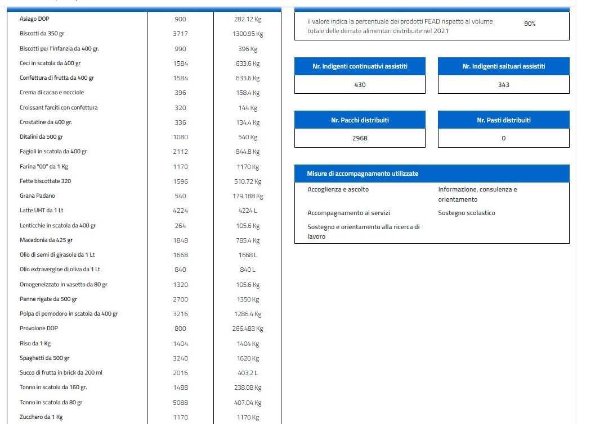
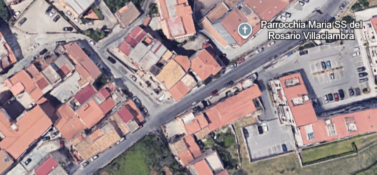

Banco delle opere di carità
Chi siamo
Cosa facciamo
Bilanci
Membri

Aiutiamo ogni giorno
le famiglie bisognose
300
persone aiutate
30.235
kg di cibo nel 2022
17.044
n. colli distribuiti
In costante crescita
255
nuclei familiari
732
persone aiutate
732
N° totale indigenti continuativi
256
N° nuclei familiari continuativi
Venite a trovarci in sede
